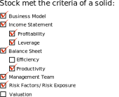

5/18/2020
ATVI
Activision Blizzard, Inc.
PDF of analysis paper
Comments on the stock:
As it currently stands, ATVI is seems to be a very solid investment for a long term hold and would be a great addition to someone's portfolio. However, the valuation currently seems a bit high as the market continues to climb. I'd like to see it come down dramatically if I'm going to be buying.
Additional interesting info I didn't add in the paper:
Call of Duty Warzone has managed to maintain a consistent top 10 on viewership (currently in 6th) making up about 3.8% of the total viewership on Twitch, with about 99k average viewers on the week and nearly 118k viewers on average the past couple of months. This is a huge boost of a little over 100k prior to the quarantine we’re all in right now; this could definitely be considered a contribution to the viewership boost these past two months. World of Warcraft and Hearthstone actually closely follow COD, coming in at 11th and 12th on the list on average with 47.5k (1.7% of viewership) viewers and 41.9k (1.6% of viewership). Overwatch came in at 18th on the list with 22.7k average viewers, making less than 1% of the total viewership on the site (0.8%) but still not too bad. Diablo II: Reaper of Souls and Diablo II: Lord of Destruction came in well behind, at 128/129 on average per week with a combined average viewer count of 2.4k, making up about 0.044% of the viewers on Twitch; Diablo is also one of the older titles on the list and hasn’t seen much of anything new that’s very relevant so it’s no surprise it hasn’t really contributed as much to the company’s performance. Viewership on these platforms are a good way to tell how well a game is doing and how well they’re able to maintain its relevance among the gamer community.